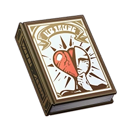

Snezhnaya · Books & Literature
Heart of the Abyssal Beast
A single-volume Snezhnayan novel follows a man who abandons his humanity in pursuit of a goal. The game has not confirmed a link between its premise and The Wise.

A single-volume Snezhnayan novel
Heart of the Abyssal Beast is cataloged as one book from Snezhnaya. Its item record presents it as a novel, and the available summary describes a man who is prepared to surrender his humanity in pursuit of a goal. The cited record does not name the author.
The premise belongs to a literary work. The fact that the book is present in the game is canon; that does not make its protagonist a confirmed historical person.
A story about a costly choice
At the level supported by the item summary, the central conflict is a person weighing humanity against an objective important enough to justify giving it up. The record does not provide enough detail to identify the man, date the events, or reconstruct the full sequence of his decisions.
The title’s reference to an abyssal beast should not be used by itself to identify a particular creature or to claim that the novel documents one of Teyvat’s known Abyssal beings.
A comparison with The Wise
In the Version 7.1 Archon Quest A Rekviem for the Underworld, Pierro recounts that Hroptatyr left Teyvat to merge with the Abyss in pursuit of knowledge. Hroptatyr also said that a notebook held the truth Pierro sought and the last trace of Hroptatyr’s humanity. The quest’s memory scenes and Pierro’s account are the evidence for that history.
The novel’s broad premise resembles this choice, but the resemblance is not an identification. No source consulted for this guide says that Heart of the Abyssal Beast is about Hroptatyr, is the notebook Pierro received, or was written as a record of the Five Sinner’s life.
What the record leaves open
The book catalog establishes the title and its single-volume format; the item record supplies a brief premise. It does not establish the protagonist’s identity, the author’s identity, or a direct connection to the Archon Quest.
Read the novel as fiction with an evocative theme, then use the Version 7.1 quest transcript for claims about Hroptatyr and Pierro. Keeping those sources separate preserves the useful comparison without turning it into canon biography.
This is an original CoreGG reading guide, not an official HoYoverse article or a reproduction of the game text. Source links below identify the records used so you can check the original context.
Sources & references
Check these sources for the original game text and reference trail.